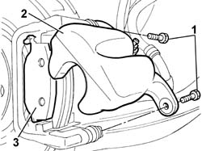
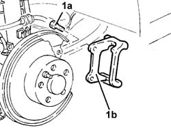

3310B57 Rear brake CALIPER BRACKET (one), left or right - R.R.
- Path
- Procedures > 33 BRAKES > 3310 DISC BRAKES > 3310B REAR DISC BRAKES > 3310B57 Rear brake CALIPER BRACKET (one), left or right - R.R.
- Kind
- repair procedure (removal / refitting; the operation number is the code)
- Applies to
- all engines; all production periods
- Interactive page
- https://sloeber94.github.io/elrnDB-lThss/en/#/78551
Applies to: all engines; all production periods
 Removing
Removing
 Refitting
Refitting- Position the vehicle on a lift.
See in Op. 4450B11 Rear WHEEL (one) - R.R.
1. Undo the fixing bolts.
2. Remove the brake caliper.
3. Remove the rear brake pads from the housing in the brackets.

Applies to: all engines; all production periods
1. Undo the bolts (1a) and remove the brackets for the rear brake disc calipers (1b).

Applies to: all engines; all production periods
Refitting
Removing- Fit the brake caliper bracket and tighten the fixing bolts.
- Fit the rear brake pads on the brake caliper bracket securing them using the springs.
- Fit the rear brake caliper complete with flexible pipe.
- Tighten the bolts fixing the brake caliper to the bracket.
See in Op. 4450B11 Rear WHEEL (one) - R.R.
- Remove the vehicle from the lift.